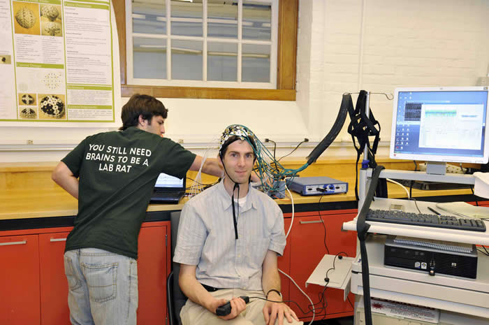

Research Projects
Multimodal EEG-NIRS Head ProbeWe are designing a new head probe for adult neuroimaging studies that combines whole-head measurements from the electroencephalogram (EEG) and near-infrared spectroscopy (NIRS). The probe is designed to be compatible with magnetic resonance imaging (MRI) and magnetoencephalography (MEG). This project is sponsored by the NIH, National Institute on Aging (R21AG033256).  PhD candidate Paolo Giacometti demonstrates the EEG-NIRS probe on Prof. Diamond. |
Neurovascular CouplingMultmodal neuroimaging techniques, which can measure both the electrical neural activity and cerebrovascular changes, can inform understanding of the neurovascular coupling relationship. We are currently using this technique to measure synergistic NIRS/EEG signals and obtain neurovascular coupling networks in the sensorimotor regions of the brain by modeling brain signal dynamics from application of system identification methods in control theory.
|

Magnetic Susceptibility TomographyWe are evaluating biomedical applications of SQUID-based measurement of magnetic susceptibility. |
Wireless Implantable Neural ProbesIn collaboration with Prof. Axel Scherer of CalTech, we are investigating the potential of micron-scale implantable probes for high-fidelity electro-corticogram (ECoG) measurements in humans. These wireless probes would minimize the risks of infection and damage to brain tissue relative to currently available technology. |